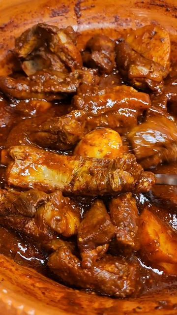

La costilla de cerdo con nopales en chile guajillo es un platillo tradicional mexicano que conbina la suavidad y el sabor de la carne de cerdo con la textura caracteristicas de los nopales. La salsa de chile guajillo aporta un sabor ligeramente picante y ahumado.